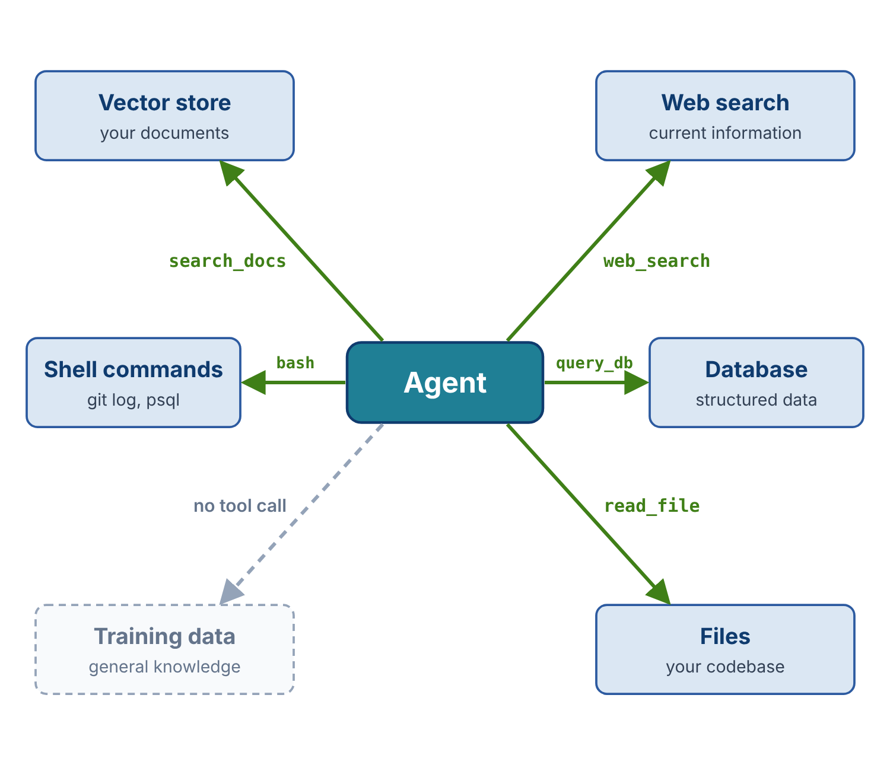

Lecture 8.1 defined RAG as a category: retrieve information, add it to the context, generate. Lecture 8.2 covered vector search, the most common implementation, in depth. This lecture covers the rest of the category. It surveys the other retrieval mechanisms, shows how to match each one to the kind of information it serves, and shows how real agents combine several of them.
Lecture 8.1 also described two places to put the retrieval step. In the retrieve-first design, the developer's code takes the user's question, retrieves information, and adds it to the context before the model is called. In the retrieval-as-a-tool design, the model decides when to retrieve and writes its own query. Every mechanism in this lecture can be wired either way. In agents, most of them run as tools.
Some information exists only on the live web. An agent asked for today's baseball standings, or for next weekend's weather to plan a trip, cannot find the answer in its training data or in a private knowledge base. It has to query the web.
Web search APIs follow one pattern. The agent sends a query string, and the API returns ranked results, each with a title, a URL, and a snippet of text. The results go into the context. From there, the agent can work from the snippets directly or fetch the full pages at the URLs that look most useful.
There are two ways to give an agent web search.
Built into the model API. Claude web search, OpenAI web search, and Gemini grounding with Google Search all run inside the provider's API call. The model decides what to search for, the provider runs the search, and the results come back in the same response. The developer writes no tool code. The provider bills each search in addition to the tokens.
A search API called from your own tool. The developer writes a web_search tool, and the tool's code calls a search service and returns the results as a tool result. Common services include:
Both designs leave the choice of query to the model. They differ in who runs the search: the provider, or the developer's code. The final project, assigned with this module, builds the second kind: a web search tool for the coding agent.
Older tutorials often use Google's Custom Search JSON API or Microsoft's Bing Search APIs. Google has closed its API to new customers and plans to shut it down, and Microsoft has retired Bing's. Prices and free tiers for the current services change often, so check them before choosing one.
Web search has three strengths:
It also has four limits:
Web search is the right choice when information changes faster than you could re-index it, or when questions range wider than any private corpus you maintain.
Web search is easy to add, but vector RAG keeps its place for four reasons. A private corpus stays on your own infrastructure. A local vector search can be faster than a network round trip. A vector store has no per-query fees at scale. And you decide exactly what the corpus contains. Web search serves public, current information. Vector RAG serves private, stable collections of documents.
Most organizations keep their important data in relational databases: customer records, inventory, orders, transaction logs. Most of the people who need answers from that data cannot write SQL. A model can translate a question such as "How many password resets did we process last month?" into a SQL query, run it, and answer from the rows that come back. Database queries are one of the most useful forms of retrieval in business applications.
Vector search is a poor fit for this data. It would treat each record as text and look for records similar to the question. A question such as "How many orders did customer #4297 place last quarter?" needs an exact count, not similar records. A database query answers it directly:
Database retrieval is usually a tool call, because the model has to write the query. This makes it a different kind of retrieval from vector search. The model generates SQL, or calls tools that run SQL behind the scenes, and the rows it gets back enter the context as structured text.
A model cannot write a good query against tables it has never seen. The agent needs the schema. A small schema can go in the system prompt. A larger one is better served by a tool, such as describe_schema, that lists the tables and their columns on request. Given the password-reset question, the model can call that tool, find a resets table with a foreign key to the users table, and write a query that joins the two.
The database tool is the right place to enforce limits, for the same reason as the directory check in Lecture 6.2: the model's output is not trusted, so the tool constrains what it can do. Three limits matter most:
LIMIT clause or caps the rows it returns, so one query cannot flood the context.Never give the agent production database credentials. Point the tool at a read replica or a constrained view, and keep the credentials inside the tool, where the model never sees them.
The read_file tool from Module 6 is a retrieval tool. It fetches a file's contents from disk and returns them into the context. The same is true of any tool that brings information from outside the model:
read_file(path) retrieves a file from disk.fetch_api(url) retrieves a JSON response from an HTTP endpoint.get_weather(city) retrieves current weather from a service.read_email(message_id) retrieves the body of an email.Students have been building RAG since Module 6 without calling it that. A file read can feel different from a vector search, but the pattern is the same: fetch external information, add it to the context, generate. The difference lies in what the agent knows in advance. A file read retrieves a known resource at a known location. A vector search retrieves a match that nobody could name in advance. The mechanisms differ, and their role in the system is the same.
The model itself is a retrieval system, in a loose sense. Training compressed an enormous body of text into the model's weights. A question asked with no supporting context is answered from that parametric memory.
Parametric retrieval is fast. It needs no tool call and costs nothing beyond the generation itself. It also has four flaws:
Parametric retrieval is fine for general knowledge, such as how a Python list comprehension works. For anything specific, recent, or auditable, use one of the explicit mechanisms.
Production agents combine retrieval mechanisms. Claude Code is a good example:
git log for a project's history or psql for a database.
Each mechanism handles what it does best. Part of an agent's intelligence lies in choosing the right one for each question.
Different mechanisms also tend toward different wirings. Web search and database queries usually run as tools, because the model must write the query: a search string, or SQL. Vector search often runs retrieve-first, in the developer's code. Because it matches meaning rather than exact words, the user's question works reasonably well as the query, without a model to rewrite it.
Composition also explains how large context windows fill up. A plain conversation would rarely approach a million tokens. An agent that adds file contents, search results, query rows, and command output to every turn can.
An agent can hold several retrieval tools at once, such as search_docs for a vector store of internal documents and web_search for the public web. The model chooses between them the way it chooses any tool: it reads the system prompt and the tool descriptions, and picks the tool whose description fits the current need. A question about internal procedures goes to search_docs. A question about today's news goes to web_search.
This makes tool descriptions part of retrieval quality. If the web_search description says it returns current information from the public web, the model reaches for it on time-sensitive questions. If the description is vague, the model may answer from stale parametric memory instead.
| Need | Mechanism |
|---|---|
| Semantic search over unstructured documents | Vector RAG |
| Current information from the public web | Web search |
| Structured data with exact answers | Database query |
| A known, specific resource | File read or API call |
| General world knowledge | The model itself |
Most agents need at least two of these. Few need all five. The design question is which combination an agent needs, not which single mechanism to use.
Retrieval is any way to get external information into the context. Strip away the implementation details, and every mechanism does the same thing: it brings information from outside the model into the prompt for one specific generation.
All of them are RAG. Only the R varies. This is why "RAG means vector databases" is the wrong framing, and "RAG is context engineering applied to knowledge" is the right one.
Retrieval supplies what the person or program calling the model did not provide. Either the developer's code or the model itself pulls it in. A model with no solid information to work from tends to hallucinate, so retrieval is central to reliable answers. And most systems that benefit from LLMs depend on private data the model never saw in training. Retrieval is the only way that data reaches the model.
Any retrieval mechanism can return the wrong information. Evaluate retrieval the way you would evaluate any search system: run real queries, look at what the agent retrieves, and check whether the final answers are correct. A wrong answer often traces back to a retrieval that missed. RAG evaluation is a discipline of its own, with dedicated tools such as RAGAS and LangSmith, and is worth studying before shipping a product that depends heavily on retrieval.
Vector search is one retrieval mechanism. Web search, database queries, file reads, API calls, and the model's own parametric knowledge are others. Match the mechanism to the information: current public information calls for web search, structured data for database queries, unstructured documents for vector search, and known resources for file reads and API calls. Database and web tools need limits at the tool boundary: read-only access, allowed tables, and caps on result size. Real agents compose mechanisms, and the model chooses among retrieval tools by reading their descriptions. Any tool that brings external information into the context is a retrieval mechanism.
The final project puts this into practice by adding a web search tool to the coding agent. Module 9 turns to memory, which also brings information into the context. Memory differs in that the agent owns it, and it accumulates across sessions instead of being queried fresh each time.